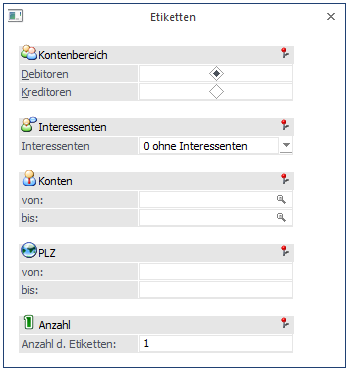

In der WinLine ist der Druck der Adressen von Kreditoren und Debitoren auf Endlos-Etiketten möglich. Der Ausdruck erfolgt auf einbahnigen Etiketten bzw. falls pro Debitor / Kreditor mehrere Etiketten erforderlich sind, kann auch ein mehrbahniger Ausdruck im Lautbild festgelegt werden.
Abhängig davon, in welchem Programm Sie sich befinden, kann der Etikettendruck über verschiedene Menüpunkte aufgerufen werden:
In der WinLine FAKT über den Menüpunkt
1 Auswertungen
1 Etiketten
1 Deb. u. Kred. - Etiketten
In der WinLine FIBU über den Menüpunkt
1 Auswertungen
1 Kontenlisten
1 Etiketten

Auswahlkriterien
Ø Kontenbereich
Debitoren / Kreditoren
Ø Interessenten
Es kann wahlweise entschieden werden, ob die Etiketten
ü mit Interessenten
ü ohne Interessenten
ü nur Interessenten
gedruckt werden sollen.
Ø Kontobegrenzung
Angabe des Nummernbereiches, für welchen Etiketten gedruckt werden sollen.
Ø PLZ-Begrenzung
Angabe des Postleitzahlenbereiches.
Ø Anzahl der Etiketten
Angabe der gewünschten Anzahl der Etiketten pro Kunde.
Durch Anklicken des Filter-Buttons können noch zusätzliche Einschränkungen vorgenommen werden.
Diese Auswertung kann nur auf dem Drucker (bzw. Spooler) ausgegeben werden. Die Ausgabe wird durch Drücken der F5-Taste gestartet.